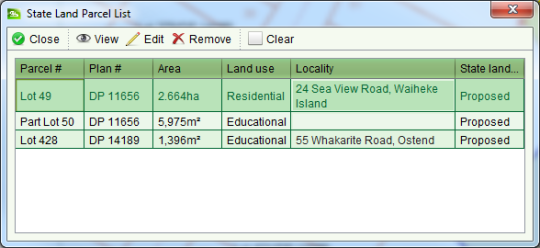

To view the parcels that are part of the job, click the State Land Parcel List tool  and the State Land Parcel List screen will
display.
and the State Land Parcel List screen will
display.

State Land Parcel List screen
Using the State Land Parcel list screen you can  View,
View,  Edit and
Edit and  Remove parcels from the job by
selecting the parcel you wish to view, edit or remove and clicking the appropriate toolbar
button.
Remove parcels from the job by
selecting the parcel you wish to view, edit or remove and clicking the appropriate toolbar
button.
When you select a parcel in the list it is automatically highlighted on the Parcel Map
Editor. To remove the highlight from the map, click  Clear.
Clear.